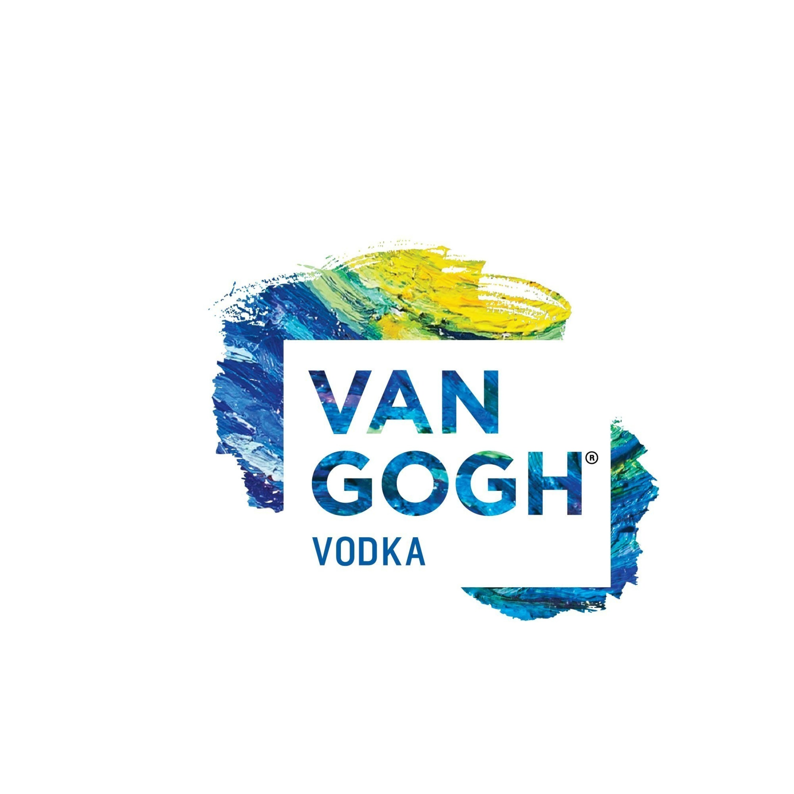
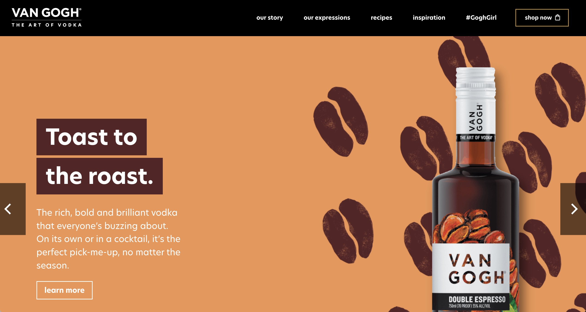
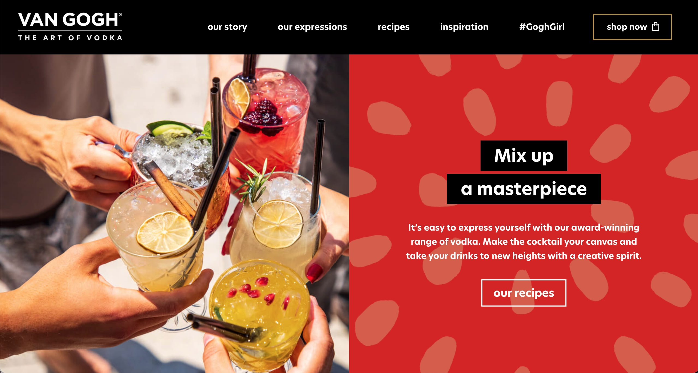
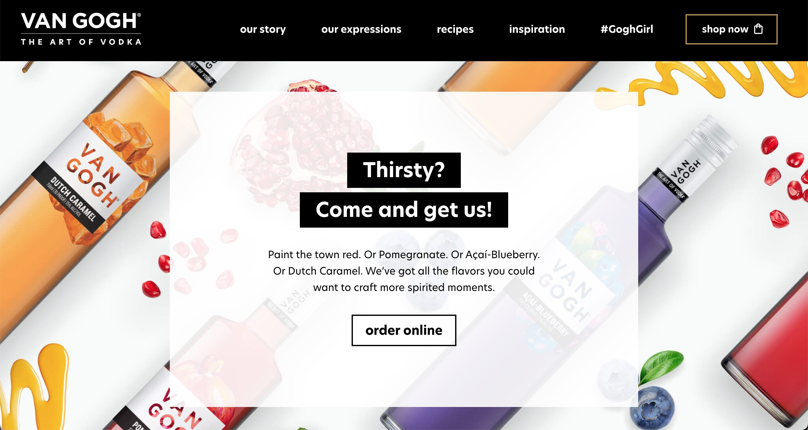
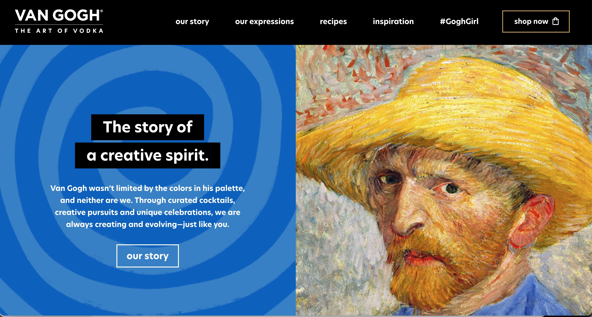
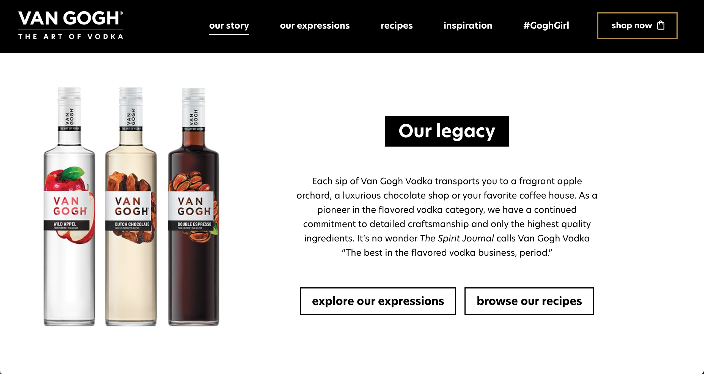
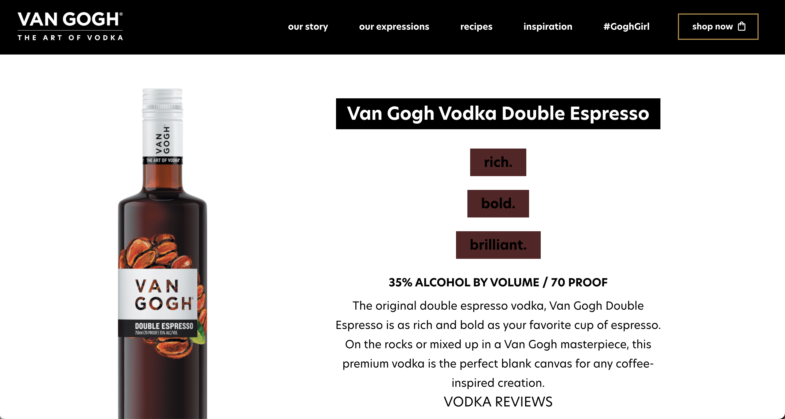
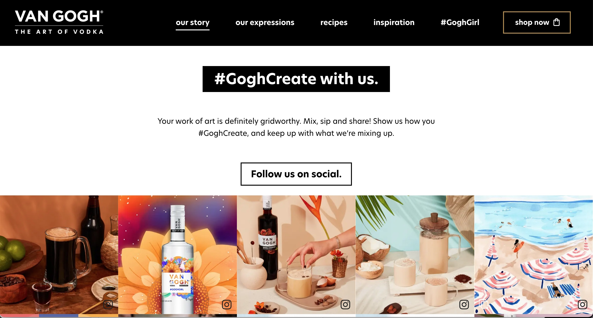
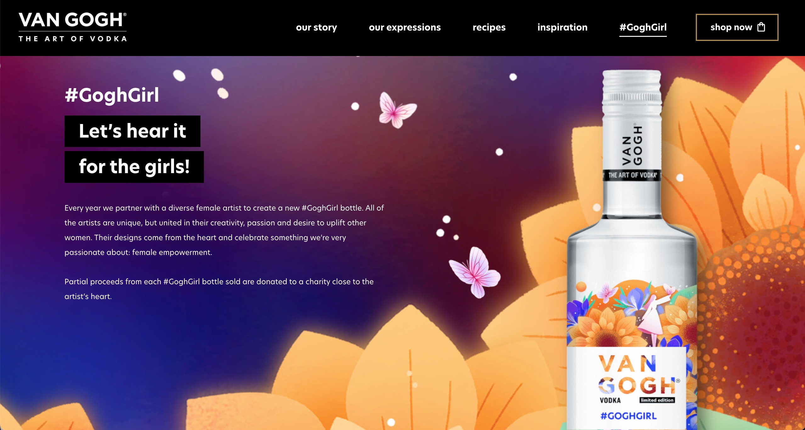
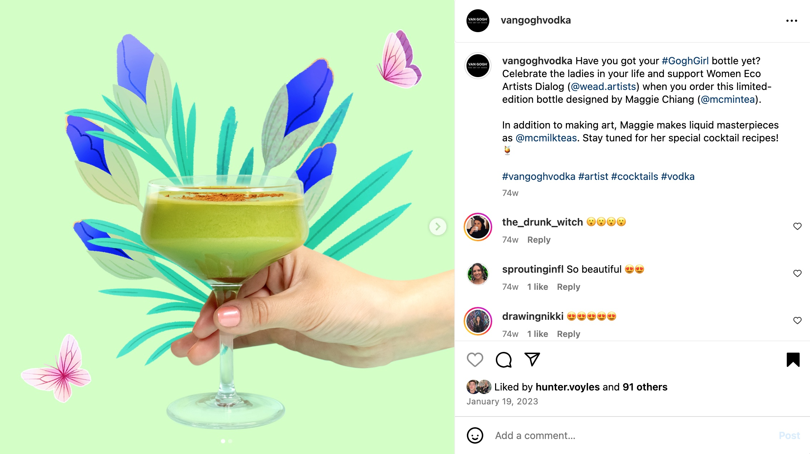

I worked on a rebrand of Van Gogh Vodka to align it more with its predominantly millennial female audience. This involved working closely with strategy, creative, and account managers to research the market, identify opportunities, audit the brand's existing content and create new campaigns and collateral that would cut through.
As the copywriter I developed and executed a new brand voice that came to life across all digital, print, OOH, and POS platforms. This included social media, email marketing, banner ads, and the Van Gogh Vodka website, as well as partner websites, and on-premise and off-premise activations.
I wrote a brand manifesto, audience personas, content pillars, and contributed to yearly marketing plans with strategy and messaging that would inform campaigns throughout the year.
I went beyond standard product descriptions to write flavor profiles for each product, which were used in our marketing and advertising. I also created cocktail names, refined recipe copy, and wrote tag lines and slogans for products.
Helping to develop and execute campaigns and content for evergreen content and special promotions also meant that I recommended artists to collaborate with the brand on campaigns. I also contributed branded content for partner websites and assisted partner agencies with copy guidance.
The rebrand was a huge success and elevated the look and feel of the brand across all consumer touch points.








